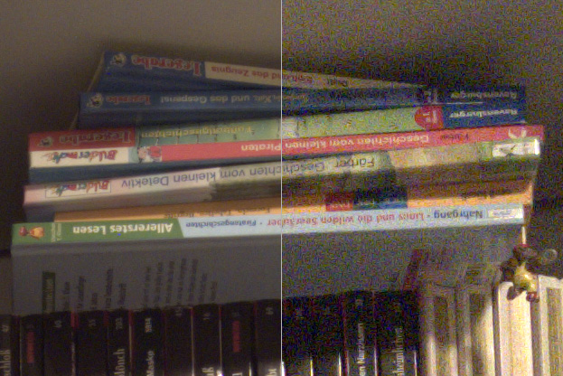

Computer Vision Laboratory, ETH Zurich
Switzerland, 2022
Over the past years, mobile AI-based applications are becoming more and more ubiquitous. Various deep learning models can now be found on any mobile device, starting from smartphones running portrait segmentation, image enhancement, face recognition and natural language processing models, to smart-TV boards coming with sophisticated image super-resolution algorithms. The performance of mobile NPUs and DSPs is also increasing dramatically, making it possible to run complex deep learning models and to achieve fast runtime in the majority of tasks.
While many research works targeted at efficient deep learning models have been proposed recently, the evaluation of the obtained solutions is usually happening on desktop CPUs and GPUs, making it nearly impossible to estimate the actual inference time and memory consumption on real mobile hardware. To address this problem, we introduce the first Mobile AI Workshop, where all deep learning solutions are developed for and evaluated on mobile devices.
Due to the performance of the last-generation mobile AI hardware, the topics considered in this workshop will go beyond the simple classification tasks, and will include such challenging problems as image denoising, HDR photography, accurate depth estimation, learned image ISP pipeline, real-time image and video super-resolution. All information about the challenges, papers, invited talks and workshop industry partners is provided below.
LIVE
[ TO BE ANNOUNCED ]
Have some questions to the speakers? Leave them on the AI Benchmark Forum ⇢
SCHEDULE


Deep Learning on Mobile Devices: What's New in 2022?
08:00 Pacific Time ┈ Andrey Ignatov ┈ AI Benchmark Project Lead, ETH Zurich
Abstract: In this tutorial, we will first recall all basic concepts, steps and optimizations required for efficient AI inference on mobile devices. Next, we will go into more detail about the latest mobile platforms from Qualcomm, MediaTek, Google, Samsung, Unisoc and Apple released during the past year, and will compare their performance in real-world computer vision AI tasks. We will also review the recent Android AI software stack updates, and will compare the deployment of TensorFlow Lite models on Android and iOS. Finally, we will talk about the power efficiency of mobile chipsets and their NPUs, and will analyze energy consumption of all popular Android SoCs.

Mobile AI Trend and The Power Performance Metric
09:15 Pacific Time ┈ Dr. Allen Lu ┈ Senior Director, Computing and AI Technology Group at MediaTek
09:45 Pacific Time ┈ Cheng-Ming Chiang ┈ Technical Manager, MediaTek Inc.
Abstract: Mobile AI is evolving from short-burst applications like photos to sustained ones such as videos, games, and VR/MR. The model complexity increases dramatically over time. To enable new mobile AI applications, a combination of process advances, hardware architecture improvements, and computation complexity reduction is required. Running bigger models with higher-resolution data under a limited power budget is the most critical challenge for mobile AI applications. The current performance metric based on the minimum inference time, peak performance metric, is a good measurement for short-burst AI applications, but not the appropriate metric for sustained AI applications because it does not consider the most critical power budget constraint. We suggest a power-performance curve (power curve) to derive the sustained performance metric at a fixed power budget and to address the mobile AI’s trend from peak performance to sustained performance. We will set up a video super resolution challenge to promote the sustained performance metric.
A Practical Guide to Getting the DNN Accuracy You Need and the Performance You Deserve
10:00 Pacific Time ┈ Felix Baum ┈ Director Product Management, Qualcomm Technologies
Abstract: Every day, developers struggle to take DNN workloads that were originally developed on workstations and migrate them to run on edge devices. Whether the application is in mobile, compute, IoT, XR or automotive, most AI developers start their algorithm development in the cloud or on a workstation and later migrate to on-device as an afterthought. Qualcomm is helping these developers on multiple fronts-democratizing AI at the edge by supporting frameworks and data types that developers are most familiar with, and at the same time building a set of tools to assist sophisticated developers who are taking extra steps to extract the best performance and power efficiency. In this session, we present the workflow and steps for effectively migrating DNN workloads to the edge. We discuss quantization issues, explore how the accuracy of models affects performance and power and outline the Qualcomm tools that help developers successfully launch new use cases on mobile and other edge devices.
Optimizing TensorFlow on Intel® Core platforms
10:45 Pacific Time ┈ Vivek Kumar ┈ Senior AI Software Architect at Intel
11:00 Pacific Time ┈ Manuj Sabharwal ┈ Senior AI Software Engineer at Intel
11:15 Pacific Time ┈ Ramesh AG ┈ Principal Engineer at Intel
Abstract: Intel optimization with TensorFlow on Hybrid architecture Intel is collaborating with Google for TensorFlow optimizations enabled via Intel oneDNN to accelerate key performance-intensive operations such as convolution, matrix multiplication, and batch normalization using the AI acceleration instructions Intel(R) AVX2 and Intel(R) DL Boost. Intel oneDNN is an open-source, cross-platform performance library for DL applications. Additional Intel optimizations include aggressive op fusions for optimal cache performance. In this tutorial, we will show basic concepts, steps and optimizations required to improve performance on Intel Hybrid core processor AlderLake. This session also covers quantization techniques and tools to boost model inference performance using low precision, sparsity and quantization to leverage the 8-bit acceleration instructions on Intel CPUs.

AI on the Edge @Synaptics : HW and SW Products and Development
11:30 Pacific Time ┈ Abdel Younes ┈ Technical Director, Smart Home Solutions Architecture at Synaptics
Abstract: New AI-at-the-edge processors with improved efficiencies and flexibility are unleashing a huge opportunity to democratize computer vision broadly across all markets, enabling edge AI devices with small, low-cost, low-power cameras. Synaptics has embarked on a roadmap of edge-AI DNN processors targeted at a range of real-time computer vision and multimedia applications. In this talk, we will describe the hardware architecture used in Synaptics VideoSmart™ VS600 family with embedded built-in Neural Processor Unit and we will show how the SyNAP™ Software framework enables lightweight and optimized AI applications such as real-time Video SuperResolution upscaling.
12:00 Pacific Time Break & Lunch

Performance Test of AI Server Systems
12:30 Pacific Time ┈ Cao Xiaoqi ┈ Senior Engineer, Huawei
Abstract: This talk provides an overview to an IEEE standard "P2937 Standard for performance benchmarking for AI server systems" under development. The standard provides a set of metrics, workloads and rules for not only benchmarking but also finding the possible bottlenecks of systems' performance for optimization. Hard issues, such as energy cost isolation, in performance test paradigm are also included in this talk.

Denoising as a Building Block for Imaging, Inverse Problems, and Machine Learning
13:00 Pacific Time ┈ Peyman Milanfar ┈ Principal Scientist / Director at Google Research
Abstract: Denoising is one of the oldest problems in imaging. In the last decade, the quality of denoising algorithms has reached phenomenal levels – almost as good as we can ever hope. There are thousands of papers on this topic, and their scope is vast and approaches so diverse that putting them in some order (as I will do) is both useful and challenging. I'll describe what we can say about this general class of operators, and what makes them so special. I will argue that denoising is increasingly important, not just as a process for removing noise, but especially now as a core engine and building block for much more complex tasks in imaging, inverse problems, and ML.

CLIP4Hashing: Unsupervised Deep Hashing for Cross-Modal Video-Text Retrieval
13:30 Pacific Time ┈ Yikang Li ┈ Research Scientist at OPPO
Abstract: With explosively increasing amount of data on social media platforms like Twitter and TikTok, fast and accurate cross-modal retrieval on mobile devices is gaining much attention. Compared with the traditional cross-modal retrieval algorithms that work in the continuous feature space, hashing-based algorithms can retrieve data faster and more efficiently. However, most existing algorithms have difficulties in seeking or constructing a well-defined joint semantic space. In this paper, an unsupervised deep cross-modal video-text hashing approach, CLIP4Hashing, is proposed, which mitigates the difficulties in bridging between different modalities in the Hamming space through building a single hashing net by employing the pre-trained CLIP model. The approach is enhanced by two novel techniques, the dynamic weighting strategy and the design of the min-max hashing layer, which are found to be the main sources of the performance gain. With evaluation using three challenging video-text benchmark datasets, we demonstrate that CLIP4Hashing is able to significantly outperform existing state-of-the-art hashing algorithms. Additionally, with larger bit sizes (e.g., 2048 bits), CLIP4Hashing can even deliver competitive performance compared with the results based on non-hashing features.
13:45 Pacific Time RenderSR: A Lightweight Super-Resolution Model for Mobile Gaming Upscaling
Tingxing Dong, Hao Yan, Mayank Parasar, Raun Krisch☉ Samsung, South Korea
14:00 Pacific Time An Efficient Hybrid Model for Low-light Image Enhancement in Mobile Devices
Zhicheng Fu, Miao Song, Chao Ma, Joseph V Nasti, Vivek Tyagi, Wei Tang☉ Lenovo Research, Motorola & University of Illinois, USA
14:15 Pacific Time PhoneDepth: A Dataset for Monocular Depth Estimation on Mobile Devices
Fausto Tapia Benavides, Andrey Ignatov, Radu Timofte☉ ETH Zurich, Switzerland
14:30 Pacific Time SMM-Conv: Scalar Matrix Multiplication with Zero Packing for Accelerated Convolution
Amir Ofir, Gil Ben-Artzi☉ Ariel University, Israel
14:45 Pacific Time Update Compression for Deep Neural Networks on the Edge
Bo Chen, Ali Bakhshi, Brian Ng, Gustavo Batista, Tat-Jun Chin☉ University of Adelaide & University of New South Wales, Australia
15:00 Pacific Time Wrap Up & Closing
CHALLENGES
Video Super-Resolution
 | Evaluation Platform: MediaTek Dimensity APU |
| Powered by: | |
Image Super-Resolution
| Evaluation Platform: Synaptics Dolphin NPU |
| Powered by: |  |
Learned Smartphone ISP

| Evaluation Platform: Snapdragon Adreno GPU |
| Powered by: | |
Bokeh Effect Rendering

| Evaluation Platform: Arm Mali GPU |
| Powered by: | |
Depth Estimation

| Evaluation Platform: Raspberry Pi 4 |
| Powered by: |
PREVIOUS CHALLENGES (2021)
Learned Smartphone ISP
| Evaluation Platform: MediaTek Dimensity APU |
| Powered by: | |
Image Denoising

| Evaluation Platform: Exynos Mali GPU |
| Powered by: |  |
Image Super-Resolution
| Evaluation Platform: Synaptics Dolphin NPU |
| Powered by: | |
Video Super-Resolution
| Evaluation Platform: Snapdragon Adreno GPU |
| Powered by: | |
Depth Estimation
| Evaluation Platform: Raspberry Pi 4 |
| Powered by: |
Camera Scene Detection

| Evaluation Platform: Apple Bionic |
| Powered by: |  |
RUNTIME VALIDATION
In each MAI 2022 challenge track, the participants have a possibility to check the runtime of their solutions remotely on the target platforms. For this, the converted TensorFlow Lite models should be uploaded to a special web-server, and their runtime on the actual target devices will be returned instantaneously or withing 24 hours, depending on the track. The detailed model conversion instructions and links can be found in the corresponding challenges. Besides that, we strongly encourage the participants to check the speed and RAM consumption of the obtained models locally on your own Android devices. This will allow you to perform model profiling and debugging faster and much more efficiently. To do this, one can use AI Benchmark application allowing you to load a custom TFLite model and run it with various acceleration options, including CPU, GPU, DSP and NPU: 1. Download AI Benchmark from the Google Play / website and run its standard tests. 2. After the end of the tests, enter the PRO Mode and select the Custom Model tab there. 3. Rename the exported TFLite model to model.tflite and put it into the Download folder of your device. 4. Select your mode type, the desired acceleration / inference options and run the model. You can find the screenshots demonstrating these 4 steps below:

ORGANIZERS
[ TO BE ANNOUNCED ]
TIMELINE
| Workshop Event | Date [ 5pm Pacific Time, 2022 ] |
|---|---|
| Website online | January 7 |
| Paper submission server online | March 5 |
| Paper submission deadline | March 20 |
| Paper decision notification | April 14 |
| Camera ready deadline | April 19 |
| Workshop day | June 20 |
CALL FOR PAPERS
Being a part of CVPR 2022, we invite the authors to submit high-quality original papers proposing various machine learning based solutions for mobile, embedded and IoT platforms. The topics of interest cover all major aspects of AI and deep learning research for mobile devices including, but not limited to:
• Efficient deep learning models for mobile devices |
• Image / video super-resolution on low-power hardware |
• General smartphone photo and video enhancement |
• Deep learning applications for mobile camera ISPs |
• Fast image classification / object detection algorithms |
• Real-time semantic image segmentation |
• Image or sensor based identity recognition |
• Activity recognition using smartphone sensors |
• Depth estimation w/o multiple cameras |
• Portrait segmentation / bokeh effect rendering |
• Perceptual image manipulation on mobile devices |
• NLP models optimized for mobile inference |
• Artifacts removal from mobile photos / videos |
• RAW image and video processing |
• Low-power machine learning inference |
• Machine and deep learning frameworks for mobile devices |
• AI performance evaluation of mobile and IoT hardware |
• Industry-driven applications related to the above problems |
To ensure high quality of the accepted papers, all submissions will be evaluated by research and industry experts from the corresponding fields. All accepted workshop papers will be published in the CVPR 2022 Workshop Proceedings by Computer Vision Foundation Open Access and IEEE Xplore Digital Library. The authors of the best selected papers will be invited to present their work during the actual workshop event at CVPR 2022. The detailed submission instructions and guidelines can be found here.
SUBMISSION DETAILS
| Format and paper length | A paper submission has to be in English, in pdf format, and at most 8 pages (excluding references) in double column. The paper format must follow the same guidelines as for all CVPR 2022 submissions: https://cvpr2022.thecvf.com/author-guidelines |
| Author kit | The author kit provides a LaTeX2e template for paper submissions. Please refer to this kit for detailed formatting instructions: https://cvpr2022.thecvf.com/sites/default/files/2021-10/cvpr2022-author_kit-v1_1-1.zip |
| Double-blind review policy | The review process is double blind. Authors do not know the names of the chair / reviewers of their papers. Reviewers do not know the names of the authors. |
| Dual submission policy | Dual submission is allowed with CVPR2022 main conference only. If a paper is submitted also to CVPR and accepted, the paper cannot be published both at the CVPR and the workshop. |
| Proceedings | Accepted and presented papers will be published after the conference in ECCV Workshops proceedings together with the ECCV 2022 main conference papers. |
| Submission site | https://cmt3.research.microsoft.com/MAI2022 |
DEEP LEARNING ON MOBILE DEVICES: TUTORIAL
Have some questions? Leave them on the AI Benchmark Forum
SCHEDULE
[ TO BE ANNOUNCED ]
CONTACTS
 |
Computer Vision Lab ETH Zurich, Switzerland andrey@vision.ee.ethz.ch |
 |
Computer Vision Lab ETH Zurich, Switzerland timofter@vision.ee.ethz.ch |
Computer Vision Laboratory, ETH Zurich
Switzerland, 2022